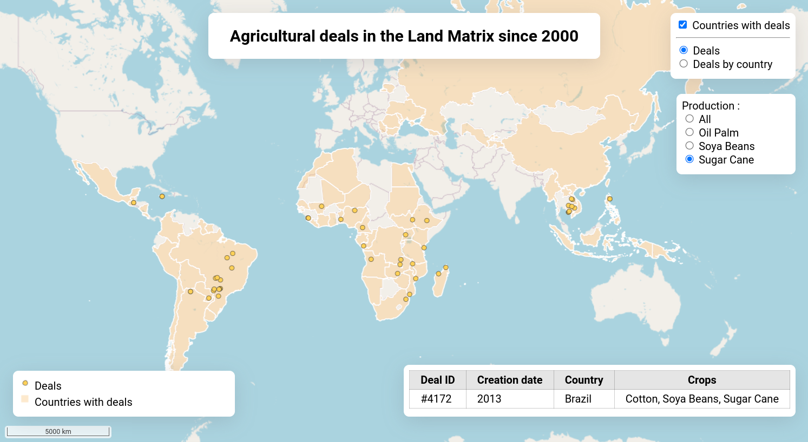
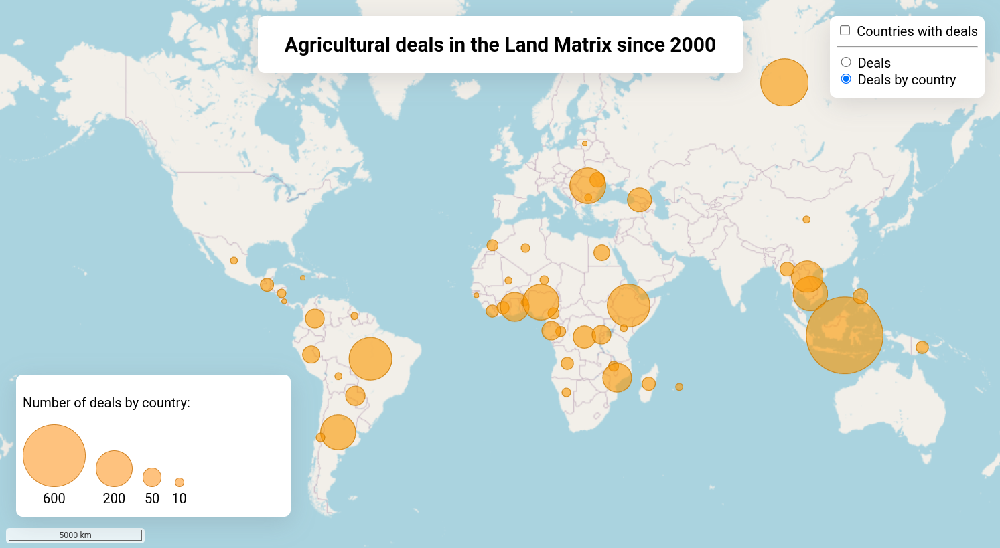

Évaluation
Modalités d’évaluation pour le cours GeoServer + OpenLayers, ou comment faire une super appli carto en binôme.
Les consignes suivantes s’adressent à la promo du M2 GeoNum 2024-2025.
Consignes

Le rendu se fait seul ou en binôme, mais pas plus !
Le détail de tout ce que vous avez à m’envoyer se trouve dans la section À rendre.
Je vous demande quelques nouveaux éléments (normal, on ne va pas juste faire un copier-coller du TP) mais TOUT peut être fait en se basant sur le code que vous avez déjà. Si je vous demande de créer des “radio buttons” quelque part, souvenez-vous qu’on avait déjà des “radio buttons” pour d’autres fonctionnalités dans l’application. Il suffit d’appliquer la même méthode que celle qu’on a vue ensemble. Je vous ai mis quelques snippets de code là où je jugeais un coup de pouce nécessaire.
Vous pouvez utiliser Chat-GPT pour vous aiguiller mais pensez à bien retravailler le code et ne pas juste accepter ce qu’il vous donne à manger sans broncher. Si la structure de votre code est très différence de celle du TP et me paraît un peu trop “propre”, je le saurai 😉
Attention, il y a peu de texte. J’attends donc que vous preniez le temps de vous relire et que vous évitiez les fautes au maximum (et ce même si moi j’ai laissé des fautes de frappe dans mon TP, oui oui, faites ce que je dis pas ce que je fais). Chat-GPT peut aussi vous aider pour ça, évidemment.
Je prends en compte dans l’évaluation l’indentation du code ainsi que les commentaires. Faites en sorte de me donner un code propre et facile à lire !
Au sujet du nom des variables / constantes : je les préfère en camelCase mais comme j’ai fait un peu des deux dans le TP je ne vous pénaliserai pas si vous les écrivez en snake_case. Vous ne serez pas non plus pénalisés si vous déclarez des variables là où on pourrait déclarer une constante. Par contre, vous serez pénalisés si vous leur donnez des noms incompréhensibles et que j’ai besoin de déchiffrer tout votre code pour comprendre à quoi sert telle ou telle variable / constante !
Je ne vous pénaliserai pas pour du code redondant. On n’en est pas à ce niveau d’optimisation. Au contraire, si je vois des étapes bien détaillées (et donc pas forcément très optimisées), je me dirais que vous avez plutôt fait ça vous-même et que vous avez bien compris votre code.
Vous verrez que je donne surtout des consignes pour vous guider sur l’ajout de HTML et JS, mais pas beaucoup en CSS. Vous êtes libres de styliser votre application comme vous le voulez, je vous demande simplement de ne pas vous en tenir au minimum vital et de faire un petit effort sur les visuels. Ça me montrera à la fois que vous n’en avez pas rien à faire de l’évaluation (ou alors que vous faites des efforts pour me faire croire le contraire) et ça fera du bien à ma rétine.
Faire tout ce qui se trouve dans la section ce qui est demandé ne suffit pas à avoir la note maximale, même si ça permet d’atteindre une très bonne note quand même ! Si vous vous en sentez capable, poussez votre application plus loin en suivant la section “aller plus loin” et montrez moi qu’en plus d’adapter du code existant, vous arrivez à rajouter de nouveaux éléments.
Ma carte finale

Pour vous guider, voici deux captures d’écran de ma carte à la fin de la préparation du TP. Notez que je n’ai pas ajouté mon nom, mais le votre devra apparaître quelque part !


Vous verrez que certains éléments sont demandés dans la section Aller plus loin et ne figureront donc pas nécessairement sur votre carte (mais vous en êtes tous capables, promis).
Allez, c’est à vous !

Ce qui est demandé
Pour les instructions du rendu d’évaluation, toutes les couches de données ici proviennent bien du jeu de données Land Matrix Agri de l’évaluation et non pas du jeu Land Matrix Mines utilisé pour réaliser les TP.
Les couches Land Matrix Mines ne seront pas prises en compte dans l’évaluation et n’ont même pas besoin de figurer dans votre GeoServer. Si vous le souhaitez, vous pouvez les supprimer.
Vous pouvez toujours aller plus loin que ce que je demande, vous ne serez jamais pénalisés pour avoir fait quelque chose de mieux que ce qui est demandé. Si je demande de créer un menu pour filtrer une couche selon deux paramètres, vous pouvez filtrer selon tous les paramètres. Si je demande des boutons radio mais que dans votre interface vous trouvez un menu de type dropdown plus logique, ça me va aussi.
Vous pouvez styliser la carte comme vous le voulez, du moment que vous respectez les règles basiques de sémiologie graphique. Si le orange “Land Matrix” n’est pas votre truc, que vous préférez utiliser des triangles ou des pictogrammes plutôt que des points, pas de problème. Vous n’aimez pas les menus avec des coins arrondis ? Vous voulez plutôt faire une application en “mode sombre” avec un fond noir et du texte blanc ? Allez-y ! L’important, c’est d’être fiers de votre rendu. C’est aussi plus intéressant pour moi de ne pas voir dix fois le même rendu mais des applications avec un peu de personnalité.
Architecture web
Je ne vous demande rien de plus que ce qu’on a vu en TP. Vous n’êtes pas évalué sur Docker, vous pouvez donc reprendre l’architecture serveur créée ensemble. N’oubliez pas de m’envoyer vos fichiers docker-compose.yml et Caddyfile, surtout si vous les avez modifiés ! Je vous ai mis la liste de tous les fichiers à m’envoyer en bas de la page.
GeoServer
Votre instance de GeoServer doit comprendre :
Un espace de travail qui contient la donnée Land Matrix Agri (cliquez pour télécharger le jeu de données).
Toutes les couches du jeu de données publiées et requêtables dans la prévisualisation type “OpenLayers” de GeoServer.
Les couches de la donnée
dealsetdeals_by_countrydoivent être stylisées. Vous n’êtes pas obligés de respecter l’exemple (voir Ma carte finale) mais attention à la sémio quand même.
OpenLayers - base
L’application doit contenir à minima :
Une carte (qui prend ou non toute la taille de l’écran, à vous de décider).
Un fond de carte au choix.
La couche
dealsaffichée en passant par un flux WMS (points simples).La couche
deals_by_countryaffichée en passant par un flux WMS (polygones simples).La couche
deals_by_country_centroidsaffichée en passant par un flux WFS (cercles proportionnels en fonction du nombre de deals, AVEC UNE TAILLE RAISONNABLE).La couche
deals_by_countrydoit être en-dessous des autres. Pour rappel, OpenLayers ajoute les couches sur la carte dans l’ordre dans lequel vous les ajoutez à votre objetmap. La dernière couche est donc au-dessus des autres.Un titre (où vous voulez sur la page).
Votre ou vos noms (où vous voulez sur la page).
Vous pouvez strcturer le reste de votre page web comme vous le voulez tant qu’elle contient tous les éléments demandés ensuite.
Filtrage
Créez un menu de filtrage avec des “radio buttons” qui permettent de filtrer la couche deals en fonction des types de production “Oil Palm”, “Soya Beans” et un autre au choix. N’oubliez pas l’option pour afficher tous les deals sans filtrage.
Il s’agit de la même chose que pour Land Matrix Mines mais au lieu de filtrer par “Gold”, “Silver”, etc. vous filtrez par des éléments comme “Oil Palm”, etc.
Requêtes
Créez où vous le souhaitez un tableau d’affichage des attributs :
Le tableau comprend les colonnes “Deal ID”, “Creation date”, “Country” et “Crops”.
Cliquer sur un point de la couche
dealsremplit la ligne du tableau avec les attributs du point.Cliquer ailleurs sur la carte vide la ligne du tableau (ou la remplit avec des “…”).
Légende
Affichez la légende des deux couches WMS quelque part dans votre interface. Le code d’affichage de la légende était présent dans le document .html du tout premier TP. Je vous conseille de regarder ce code ou l’exemple officiel d’OpenLayers, et je vous guide un peu pour rédiger une version plus simple (parce que souvent, l’exemple officiel en fait un peu trop) :
Vous devez créer quelque part dans votre interface une balise
<img>. C’est elle qui contiendra l’image de la légende.Vous avez besoin de récupérer la résolution de la carte pour pouvoir demander la légende à GeoServer. Si votre objet s’appelle
map, c’est comme ça qu’il faut vous y prendre :const resolution = map.getView().getResolution();Vous devez ensuite récupérer l’URL de l’image de la légende. C’est ce que
<img>a besoin de lire pour afficher l’image dans l’interface. En imaginant que la source de ma couche s’appellesourceet que j’ai bien stocké la résolution de ma carte dansresolution:const url = source.getLegendUrl(initResolution);Pour définir la source
srcd’un tag<img>dont l’id est “legend”, on s’y prend de la manière suivante :document.getElementById('legend').src = url;
Avec ces éléments, il est facile d’afficher une légende sur sa carte !
Échelle
Affichez une échelle dans votre application ! La solution est quelque part dans un des TPs donc je n’en dis pas plus ici.
Inutile de reproduire l’exemple officiel d’OpenLayers qui est super complexe, beaucoup trop pour notre carte. Vraiment, j’insiste, il y a la réponse dans un des TPs.
Aller plus loin

Si vous avez tout fait jusqu’ici, bien joué, votre application contient le minimum attendu pour l’évaluation. Vous avez donc bien compris les bases de GeoServer et OpenLayers et vous avez tous les outils pour faire une carte basique.
Cependant, pour permettre de valoriser les étudiants qui sont suffisamment à l’aise pour ajouter de nouvelles features à leur carte et pas “seulement” adapter du code existant, vous ne serez pas notés sur la note maximale si vous n’ajoutez pas les éléments suivants.
Deals et son contexte
Masquez le menu de filtrage et d’affichage des attributs de deals lorsque la couche n’est pas affichée. Je vous donne un indice en vous montrant comment ajouter du style CSS à un élément HTML depuis du code JavaScript :
// Je souhaite afficher mon élément "element"
document.getElementById('element').setAttribute('style', 'visibility:visible');
// Je souhaite masquer mon élément "element"
document.getElementById('element').setAttribute('style', 'visibility:hidden');Bien sûr, vous pouvez jouer avec d’autres attributs que “visibility” si besoin.
Légende pour la couche WFS
Il manque une légende pour notre couche WFS. Comme on définit un style en JavaScript, on va devoir “dessiner” nous-même notre légende avec des cercles proportionnels. Comme c’est un exercice bonus je ne vais pas vous guider pas à pas, mais voici tout de même quelques éléments pour vous guider.
Vous devez commencer, comme toujours, par créer vos éléments en HTML. Ici, il vous faudra au minimum une <div> pour contenir tout le reste de votre légende, et à l’intérieur une nouvelle <div> par cercle que vous souhaitez afficher. Par exemple, j’ai choisi d’afficher quatre cercles.
Mes cercles sont en fait des <div> stylisées en CSS. Voici les propriétés importantes :
display: utilisezblockouinline-blocksi vous trouvez que votre cercle ne réagit pas aux autres propriétés CSS.heightetwidth: si ces deux propriétés ne sont pas définies, elles sont nulles lorsque votre div est vide et vous ne la verrez donc pas. Il faut donner une hauteur et une largeur à notre futur cercle.border-radius: c’est la propriété CSS qui permet d’arrondir les coins d’une div. Un cercle, en fait, c’est une div avec des coins très arrondis.background-color: sans cette propriété, vous ne verrez pas votre cercle car il n’a pas de couleur.
Vous allez devoir vous baser sur la manière dont vous calculez le rayon de vos cercles proportionnels dans la légende OpenLayers (donc votre Style).
À partir de là, vous avez plusieurs possibilités :
Soit vous appliquez vous-même la formule à des “paliers” pour trouver la taille correspondante. Par exemple, j’utilise la formule du rayon pour calculer la hauteur et la largeur (= diamètre) du cercle qui doit représenter 50 deals et je définis manuellement
heightetwidthen CSS.Soit vous utilisez une formule en CSS pour ne pas avoir à faire le calcul vous-même pour chaque palier. Par exemple, pour mon palier 50 deals j’ai mis quelque part dans mon CSS cette propriété (attention, cette ligne de code correspond à MA formule
rayondans mon objetStyle, pensez à bien utiliser la votre !) :height: calc(sqrt(50) * 3px);Soit vous êtes super chaud et vous voulez automatiser le tout en JavaScript. Dans ce cas je vous laisse faire, vous savez déjà utiliser
setAttribute().
Affichage dynamique des légendes
En utilisant les deux points précédents, faites en sorte que les légendes ne s’affichent que si la couche associée est affichée. Si la propriété CSS visibility ne donne pas des résultats suffisants, vous pouvez regarder la propriété display.
À rendre
Le travail d’équipe a payé, vous avez enfin une application à me rendre pour l’évaluation ! Vous pouvez être fiers de vous.

Vous pouvez au choix push votre code sur GitHub ou GitLab (n’oubliez pas de retirer “dist” de .gitignore dans ce cas, j’ai besoin de voir le contenu de ce dossier), ou alors m’envoyer une archive .zip qui contient les fichiers et dossiers suivants :
docker-compose.ymlCaddyfileapp/index.html(+ tout autre fichier.htmlque vous avez créé)app/style.css(+ tout autre fichier.cssque vous avez créé)app/main.js(+ tout autre fichier.jsque vous avez créé)app/distgeoserver/opt/datageoserver/opt/stylesgeoserver/opt/workspaces
Pour envoyer l’archive, vous pouvez utiliser la méthode de votre choix : Google Drive partagé, WeTransfer, FileTransfer avec l’université… peut importe, mais n’oubliez pas que je dois recevoir les éléments listés ci-dessus (ou le lien qui pointe vers ces éléments) à l’adresse marie.gradeler@gmail.com le 20 Janvier 2025 au plus tard !
S’il manque un seul de ces fichiers / dossiers, je pourrais ne pas pouvoir démarrer votre application. Vérifiez bien que vous avez tout envoyé !
Vérifier aussi que vous n’avez pas oublié de build votre application (cf. TP 2).
N’oubliez pas de me faire un retour !
Ce que vous avez suivi est une première version de ce cours, une version qui est donc perfectible. Je vous ai normalement fait passer un questionnaire de feedback à remplir pour m’aider à améliorer la forme et le contenu pour les années suivantes. Pensez à le remplir, ça m’aiderait beaucoup !
N’hésitez pas non plus à m’envoyer des questions liées à vos projets GeoNum, je serais ravie de vous aider. Promis, j’essaie de passer pendant la semaine de développement des projets.
Et pour ceux qui connaissent la source des GIF et qui trouvent qu’il manque quelque chose, non, je ne l’ai pas oublié, le voilà :

Bonne continuation et à bientôt peut-être ! Qui sait, le monde de la géomatique est petit 😁